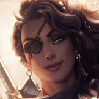
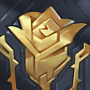
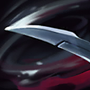
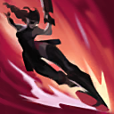

核心裝備
 蒐集者
蒐集者 無盡之刃
無盡之刃 多明尼克的問候
多明尼克的問候 嗜血者
嗜血者 守護天使
守護天使

以下為本站 7.2d 校正後的標準配置；實戰仍需依敵方陣容調整。


技能優先：Q > E > W

交替使用不同普攻或技能命中英雄可提高風格評級；近距離普攻附加魔法傷害，並可衝向受到硬控或擊飛的敵人接續攻擊。
遠距離射擊造成物理傷害，近距離則改為範圍斬擊；可在三技突進途中施放，並能觸發暴擊與吸血。

旋轉刀刃攻擊附近敵人兩次，並摧毀進入範圍的敵方飛行道具，是疊風格與進場保命的關鍵技能。

穿越敵方單位造成魔法傷害並提高攻速，途中可接一技；參與擊殺英雄會重置冷卻，用於進場與連續收割。
只有風格達到 S 級時才能施放，持續向附近多名敵人射擊；每發都可暴擊並套用吸血，是團戰爆發核心。
普攻起手 → 1技射擊 → 2技雙段斬擊 → 再接普攻 → 3技追擊或撤出
交替使用不同攻擊提高風格，二技同時可擋關鍵飛行道具。三技不要固定往前衝，能穿越安全目標撤離時也可作為退場手段。
被動接硬控 → 近距普攻 → 1技近戰斬擊 → 3技穿越 → 2技補風格並防護 → S級施放4技
隊友硬控命中後用被動靠近，再以不同技能快速累積風格。確定敵方主要硬控已交或被二技擋掉後，才施放大絕。
4技壓低多人 → 3技追殘血 → 突進途中接1技 → 普攻完成擊殺 → 擊殺重置再突進 → 第二次收割
參與擊殺會重置三技。第一個目標倒下後先確認下一個落點是否安全，再利用重置切換目標，不要因連跳直接進入敵方完整控制鏈。
以普攻與一技交替做短換血，配合隊友硬控觸發被動接近目標。沒有隊友先手或敵方關鍵控制尚未交出時，不要只為提高風格直接三技進場；二技要優先用來擋掉關鍵飛行道具，而不是單純補傷害。
蒐集者與無盡之刃成形後，先在戰圈外用不同攻擊累積風格，等隊友控制命中或敵方血量被壓低再三技切入。突進途中接一技可快速疊層，二技同時提供兩次攻擊與防護；確認達到 S 級且沒有立即控場威脅後再開大。
煞蜜拉不是第一個進場的人，應等待敵方控制與保命技能被逼出，再利用被動或三技進入收割距離。大絕遭硬控會被中斷，因此開啟前要確認主要控場位置；取得擊殺或助攻後利用三技重置換目標，必要時以光盾、二技和閃現保住連殺節奏。
對局名單是本站依英雄機制與目前配置整理的參考，不等同固定勝率。
先照標準出裝與符文走；只有敵方陣容真的形成威脅時，再替換必要格子。
觸發：敵方至少有 2 名高生命／高護甲前排，而且團戰多數時間必須先處理前排。
標準配置已經有足夠打坦能力；如果已有斷切、百分比穿透或殞落，就不要為了「坦克多」硬拆暴擊／攻速核心。
觸發：敵方有多名能直接貼到後排的刺客／爆發英雄，或你常在開始輸出前就被秒。
魔提斯深淵提供魔防與低血量魔法護盾，比單純增加輸出更能保住進場或持續輸出。
骨甲直接降低同一名敵人接續幾次技能或普攻的傷害。
觸發：敵方有多個硬控，而且控制鏈會讓你直接失去輸出時間。
先購買水銀飾帶取得主動解控，之後再合成水星彎刀；水銀飾帶是合成組件，不是另一件要與水星彎刀互換的成裝。
犧牲部分輸出型傳奇符文，換取韌性與緩速抗性。
提醒：水星彎刀的路線是先購買水銀飾帶，再完成水星彎刀；水銀飾帶不是另一件終局成裝。
觸發：敵方有多名高治療／高吸血英雄，或核心前排能在團戰中大量回血。
致死宣告兼顧暴擊、穿透與重創，適合射手在不拆核心輸出邏輯下補反治療。
觸發：敵方有多個大量護盾來源，而且己方沒有其他更適合負責反護盾的英雄。
巨蛇鋒牙降低敵方護盾，只有護盾真的成為團戰主要問題時才值得犧牲一般輸出位。
提醒：反護盾裝通常是彈性位，不要只因敵方有一個小護盾就固定購買。
7.2a 飛龍路第四批正式攻略：技能名稱與核心機制依 Riot Games 台灣《激鬥峽谷》煞蜜拉英雄頁校正；出裝、符文、召喚師技能與技能順序交叉參考 WildRiftFire Patch 7.2a 後整合。Tier 維持本站既有飛龍路評級。｜v68：套用吉茵珂絲 v64 固定母版。｜v76 第二階段：新增 3 位合適輔助與搭配理由，並完成攻略內容欄位驗收。
本站於 2026-08-27 依 Patch 7.2d 重新檢查此配置。 Tier、出裝、符文與對局屬於 Wild Rift Guide 的整理與分析，不是 Riot Games 官方推薦；版本改動後會再依官方公告與實戰資料校正。